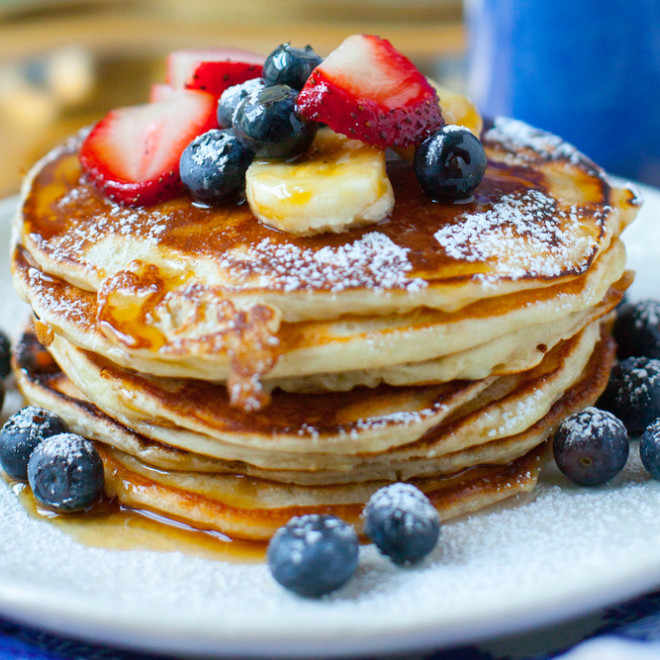

Pancakes

Description
This is a quick and easy recipe for pancakes using self-rising flour.
Ingredients
- 1 cup sifted self-rising flour
- 1 cup milk
- 1 egg
- 2 tablespoons vegetable oil
Steps
- Beat eggs, oil, and milk together, and add to flour. Stir until combined.
- Heat a greased griddle until drops of water sprinkled on it evaporate noisily. Pour 1/8 to 1/4 cup batter onto the griddle. Turn over with a metal spatula when bubbles begin to form on top. Cook second side to a golden brown color.